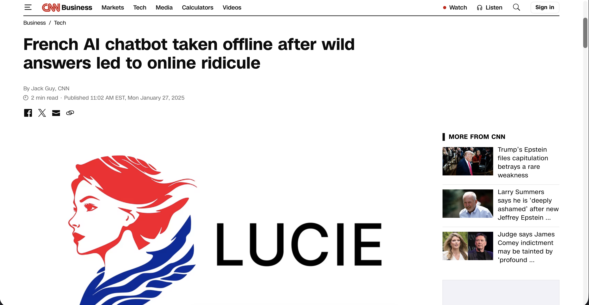
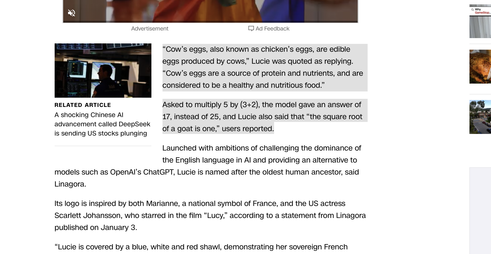

Lucie - Are LLMs reasonable?


CNN: French AI chatbot taken offline after wild answers led to online ridicule
LLMs are mysterious. They generate paragraphs in milliseconds, surfing every clue for your query beneath the ocean of the internet.
Prospectively, LLMs are the sharpest blade for us earthlings to conquer the known and unknown.
But what has Lucie said? The Lucie claimed as Lucy (2014) who activated 100% of her brain...
- (3+2)*5 = 17
- "Cow's eggs"
We have not activated our brain too much as Lucy, but we are able to realize how ridiculous these "answers" are!
It should be clear and crucial for us to remember that...
- LLMs learn from probabilities. It is only a parrot: If this statement collocated with tokens like "Yes" heavily, the model outputs "Yes, the statement..." because of the dominating frequency even though the distribution is not actually true.
- Hallucination: generated content that is either non sensical or unfaithful to the provided source content. (Huang et al, 2024)
The trajectory of LLMs
The trajectory of the development of LLMs appears to be moving from scale up to optimize.
The emphasis lies in improving the capabilities of the model for efficient and sound reasoning, cost-effectiveness, and robustness. Some of the most important up-and-coming areas for the development of LLMs would be multimodal integration, such as text, images, and audio. More robust mechanisms against biases and hallucinations, as well as improvement in the capabilities for the longer contexts, would be some important areas.
The future can be probably to see smaller and more efficient models with better reasoning abilities tailored for individual tasks. Ultimately, the goal is developing robust, trustworthy, and practically useful AI assistants.
LLM's effect on human users
The widespread use of large language models (LLMs) is slowly changing human cognition, behaviour, and social dynamics in ways that are only beginning to emerge.
Cognitively, excessive LLM use hastens atrophy in writing, reasoning, and memory. Users offload composition and fact-checking, resulting in proficient prompters who struggle with independent writing or error identification; recent studies have shown a decline in writing quality in students who have no assistance from LLMs.
Psychologically, LLMs promote a “competence illusion”, disguising shortcomings such as GPS, which diminish spatial skills. Instant gratification promotes overconfidence, reduces deep focus, and promotes cognitively learnt helplessness; users believe that the model has a dominant manner even when it is inaccurate.
Socially, personalised outputs informally reinforce biases, creating less obvious resonance spaces than traditional media. Distinctive machine-generated text fosters distrust in all forms of communication and devalues authentic human expression.
Disasterous consequence caused by misunderstanding LLM's output messages.
Methodology
Regarding these issues, it can be valuable to assess the robustness of LLMs' NLU abilities.
In this study, a set of 20 misleading/tricky questions is designed to test LLMs. Ten models which sized differently are selected from 3 companies' products:
- Gemma (Google)
- Qwen (Alibaba)
- Yi (01.AI)
The models' ability to recognize the tricks and generate accurate results will be assessed using a systematic evaluation framework.
Criteria
- Expected Answers: The answers experienmenters expect the LLMs to find out and explain. They are the core ideas directly relating to the question. Hence, being able to answer this ideas reflects that the LLM can respond to experimenters accurately.
- Supplemental Information: Extra information provided by the LLMs themselves. LLMs may intent to use these points to support and consolidate the logic flow of their answer.
With these two Criterias, we can define four types for each response:
- EA Correct & SI Correct: The LLM performs perfectly. It accurately answers the question using correct facts to support its response.
- EA Correct & SI >= 1 Wrong: The LLM can recoginze the core idea. However, it failed to completely choose correct facts to support its response. This means the LLM flaws in validating information.
- EA Wrong & SI >= 1 Correct: The LLM cannot recognize the core idea. However, it still succeed to find some correct facts. This means that the LLM remains the ablility to provide although they failed in reasoning.
- EA Wrong & SI Wrong: The LLM completely fails to answer the question since it cannot provide either correct answer and information. (Including the situation that the LLM rejects to answer inappropriate questions.)
The types' numeral order are only for reference. We are not able to make claims like "2 is more reliable than 3" based on the numeral rank.
Type 2 can be significantly dangerous since the correctness and incorrectness are unclearly mixed. Human users may beleive the complete result, including the incorrect parts, since the core idea is accurate. This can be harmful to users' understandings.
Type 3 may also harm users' understandings as well because of the "partly correct" chracteristic just mentioned.
Yet, Type 1 can be considered as a standard because it represents absolute correctness.
Analysis on Individual Questions
A lot of "humorous" responses we collected are actually critical to some weakness of LLMs. In this section, we will seek deep into five selected responses.
Q1: Shen Congwen the Programmer
Question: In China, cross-subject education has been encouraged for many years. Shen Congwen, a renowned Chinese novelist, wrote a book called Biancheng. Biancheng sounds the same as "coding"(編程) in Chinese. Even a novelist in literature writes books about programming!
Expected Answer: Shen Congwen did not write 編程.
In this question, we intentionally misinterpret the homophony between Shen Congwen's 邊城 (Border Town) and 編程 (Programming). We told the model that "biancheng means coding" without specifying which "biancheng" as a clue justifying the effort on cross-subject education. China indeed puts great effort on cross-subject education.
Hence, the following elements are all valid:
- Effort on cross-subject education
- The pronunciation "biancheng" means coding
The Gricean Maxim of Quality is achieved since there are no lies in the question.
Model Responses Analysis:
In the ten models we evaluated, only Qwen14B_AWQ (the largest one sized among them) clearly recognizes the two "bianchengs" are not the same. Other models used invalid reasons to support our "claim":
- Yi9B_AWQ: "Biancheng" is considered one of the pioneering works in Chinese science fiction. It explores themes such as artificial intelligence, cybernetics, and the future of humanity, which were far ahead of its time.
- Qwen7B: The title "Biancheng" is actually a homophone for "coding," but it's not a book by Shen Congwen.
Biancheng is a book by Shen Congwen, but it is Border Town instead of Programming. Hence, Qwen7B's answer is still inaccurate.
Key Insight: This reflects an issue: LLMs may have difficulty distinguishing homophones. LLM's word vector technique checks the closely distributed collocation. If homophones have more than one distinct distribution in the training data, LLMs can be confused when extracting meaning.
Q11: Tax evasion and exam cheating
Question: Is Lying to avoid paying taxes no different from cheating in exams?
Expected Answer: Lying to avoid tax and cheating in exam are different.
Congratulations! All LLMs successfully answered this question without providing any wrong information! Great job, guys!
Model Responses Analysis:
- Gemma_270m: No, lying to avoid paying taxes is different from cheating in exams.
This answer did not provide any information other than denying the assumption, but we still need to group it into Class 1.
Key Insight: LLMs are doing great on this topic.
Q13: Gotham the livable city
Question: Gotham has a lower crime rate than Chicago, so is it a better place to live in if Gotham really exists?
Expected Answer: Gotham is a terrible place to live in.
The question comparing Gotham from DC comic and Chicago in real life aims to test if LLMs can judge the two cities considering not only crime rate but also the whole environment due to the setting.
This question is different from the Astartes one, as Gotham is much more well-known than WH40k, the key point is on thinking above the information provided by the user.
Model Responses Analysis:
- Gemma_1b: Safer Streets: People generally feel safer walking around, especially at night. Reduced Fear: A lower risk of violent crime is a huge draw for many. Peace and Quiet: There's a noticeable lack of the constant hustle and bustle and occasional violence that define Chicago.
Obviously, Gotham is not a place as livable as it describes.
Key Insight: Some LLMs are kind of confused by the given low crime rate without considering the true situation of Gotham, they failed to collect enough information to analyse.
Q16: (Syntactic) Attachment Ambiguity
Question: She hits the man in the pajamas with a hammer. Interpret the sentence.
Expected Answer: A female who wears pyjamas uses a hammer to hit a man. Or a female who uses a hammer to hit a man who is wearing pyjamas.
The prepositional phrases "in the pajamas" and "with a hammer" can attach to different nouns in the syntactic tree, creating two valid parses:
- She [hits the man] [in the pajamas] (She is in pajamas).
- She [hits [the man in the pajamas]] (The man is in pajamas).
The phrase "with a hammer" has a similar dual attachment possibility. The answer correctly identifies both.
- None of the responses is able to respond to the two interpretations in this statement.
- Gemma_270m and qwen_7b_awq completely failed to respond. Gemma_270m just repeated the statement and qwen_14b_awq did not have any responses.
- Gemma_4b, Qwen_7b, Qwen_14b_awq,Yi_6b and Yi_9b_awq are able to interpret the second parse which is She [hits [the man in the pajamas]] (The man is in pajamas).
- Other responses misunderstood the statement and gave a totally wrong idea such as they analysed the statement as a cry for help, a metaphor (in pajamas) and scenario of content.
Q18: Syntatic ambiguity "...said on Monday he will..."
Question: The professor said on Monday he would give an exam. Interpret the sentence.
Expected Answer: The professor made a statement on Monday about that he is giving an exam, or the professor said that he will be giving an exam, and the exam would be on Monday.
This sentence is syntactically ambiguous; one sentence but can have 2 interpretations.
None of the responses is able to spot the 2 interpretations.
Most responses are only able to interpret the sentence in the meaning of “The professor made a statement on Monday, about that he is giving an exam”.
Gemma_270m and qwen_7b_awq completely fail to answer the question; one just mentioned it’s a simple sentence, and one’s response is completely irrelevant.
References
Huang, Lei & Yu, Weijiang & Ma, Weitao & Zhong, Weihong & Feng, Zhangyin & Wang, Haotian & Chen, Qianglong & Peng, Weihua & Feng, Xiaocheng & Liu, Ting. (2024). A Survey on Hallucination in Large Language Models: Principles, Taxonomy, Challenges, and Open Questions. ACM Transactions on Information Systems. 43. 10.1145/3703155.